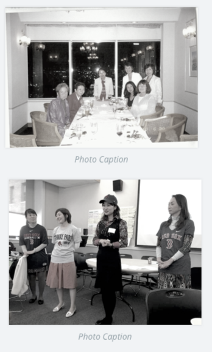

Japanese Women's Leadership Institute
Empowering Japanese women to become leaders and to make positive social change and innovation in Japan.
Tell us your email and we will let you know when applications open again!
SubmitEmpowering Japanese women to become leaders and to make positive social change and innovation in Japan.
Tell us your email and we will let you know when applications open again!
SubmitDevelop leadership skills and empower current and future generations of women leaders in Japan.
Foster more active partcipation and empowerment of women in Japanese civil society
Based in Boston, JWLI was founded in 2006 and offers four weeks of hands-on nonprofit management training with an entrepreneurial aspect.
The Japanese Women's Leadership Initiative (JWLI) was founded in 2006 by three visionary women in Boston, Massachusetts: Atsuko Toko Fish, Mary Lassen, and Catherine Crone Coburn. JWLI brings emerging women leaders, referred to as the Fellows, from Japan to Boston to recieve four weeks of hands-on experience and training with successful nonprofit organizations in nonprogit management and training development. During their stay in Boston, the Fellows will develop an Action Plan, which will serve as a step-by-step roadmap to make their dreams of social change a reality. After returning to Japan, the Fellows are expected to make a difference in their communities based on their Action Plans. The purpose of this program is for the fellows to share the knowledge and experience they acquired in Boston with the other women and social sector leaders within Japan.
The Fish Family Foundation, operating in conjunction with other Boston-based nonprofit organizations, is administering JWLI in partnership with Simmons College School of Management's Center for Gender in Organizations.
In 2010, thanks to the generous funding provided by the U.S.-Japan Foundation, JWLI expanded its vision to hold public forums within Japan. Held in 2010, 2012 and 2013, these public forums provided information about the nonprofit sector and the American apporach to philianthropy with hopes to inspire women to take leadership roles. The Forum Program reached hundreds of Japanese citizen, advocating for their involvement in addressing the needs of Japanese society.
Atsuko Toko Fish retired as a U.S.-Japan cross-cultural consultant, and is currently involved with various social innovative momements as a philanthropist. She is also a trustee of the Fish Family Foundation. In the wake of 3.11, Atsuko established the Japanese Disaster Relief Fund-Boston (JDRFB) with The Boston Foundation (TBF) and the Japan Society Boston (JSB) to supoort immediate and mid-term recovery in the affected regions of Tohoku. Atsuko visited Tohoku several times after the diaster to assessed and evaluated the needds of the people and community. In teh two years the fund was active for, JDRFB raised approximarely $1 million and distributed 24 grants to 19 organizations and projects working directly in Tohoku. It has been reported by the grantees that JDRFB's $1 million grants were leveraged to have $6 million of economic impact.
The Fish Foundation (the Foundation) is a private family foundation in Boston. The Foundation was established in 1999 to formalize the family's tradition of responsibilty to improve its community and to share the joy of giving with future generations. The Foundation currently focuses on aiding immigration, at-risk youth, and people struggling with mental health.
In 2007, the second year of JWLI, the Center for Gener in Organizations (CGO) at Simmons School of Management in Boston became JWLI's institutional and academic partner. CGO was selected because of their unique ecpertise in the areas pertaining to gender and leadership, its program located in the first business school in the world designed specifically for women, and expertise in the area of nonprofit management